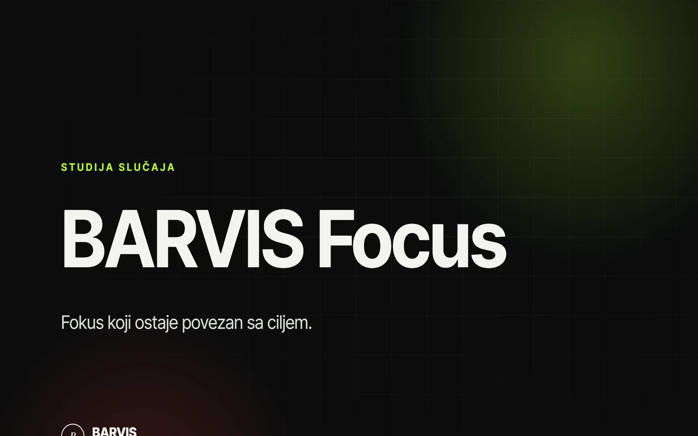

Studija · Sopstveni proizvod
BARVIS Focus Fokus koji ostaje povezan sa ciljem.
- Problem
- Tajmer u jednoj aplikaciji, zadaci u drugoj, beleške u trećoj. Nije se videlo gde odlazi vreme.
- Rešenje
- Tajmer vezan za projekat i zadatak, plan dana, analitika po danu, nedelji i mesecu i nivoi veština koji rastu sa uloženim vremenom.
- Tehnologija
- Django, PostgreSQL, Docker; privatni server.
BARVIS Focus je moj sopstveni proizvod, ne klijentski projekat. Pokazuje kako gradim složen sistem od početka do kraja: sinhronizaciju između uređaja, rad samo tastaturom i analitiku.

41 sekunda kroz sistem: tajmer, zadaci, plan dana, analitika, razvoj i telefon. Izmišljeni podaci.
Fokus koji ostaje povezan sa ciljem.
Na telefonu.
Isti tajmer nastavlja tamo gde je stao na računaru.

Analitika.
Vreme po danima i projektima, uz poređenje sa prethodnim periodom.

Zadaci sa napretkom.
Svaki završen pomodoro se upisuje zadatku.

Razvoj.
Uloženo vreme pretvara se u nivoe veština.

Tehnički deo: Isti tajmer teče na računaru i telefonu, mali prozor iznad drugih aplikacija, paleta komandi i rad samo tastaturom.
- Tajmer na svim uređajima
- Prečice sa tastature
- Analitika i CSV izvoz
- Pristupačnost
- Privatni server